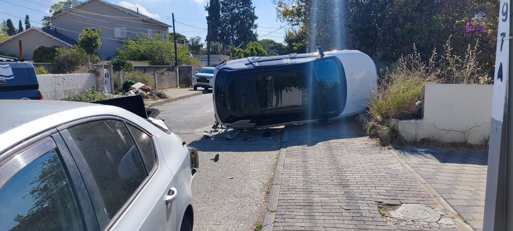
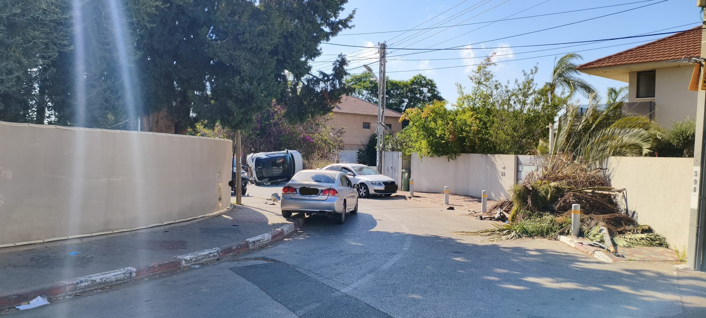
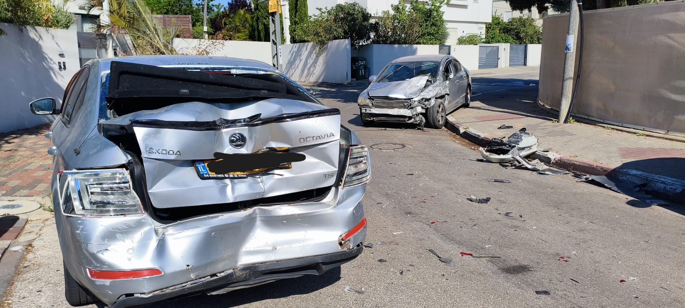
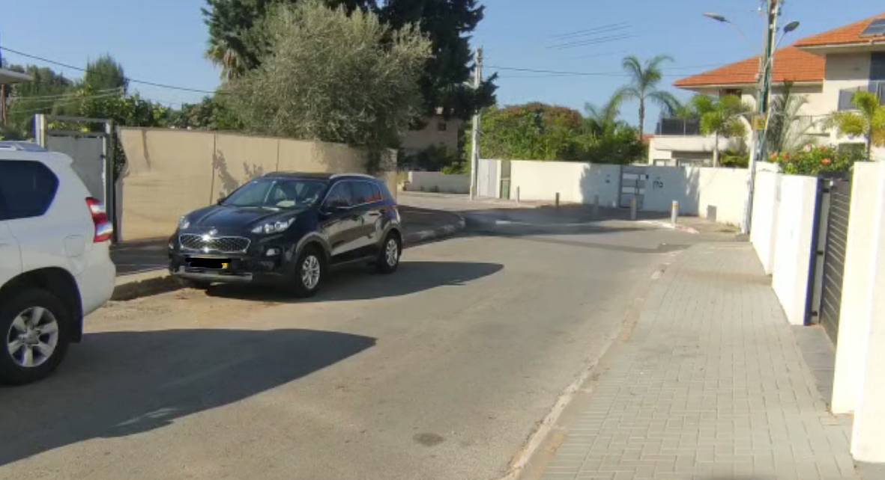
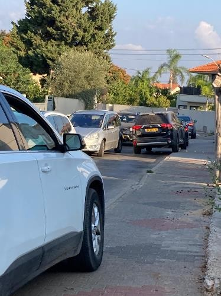
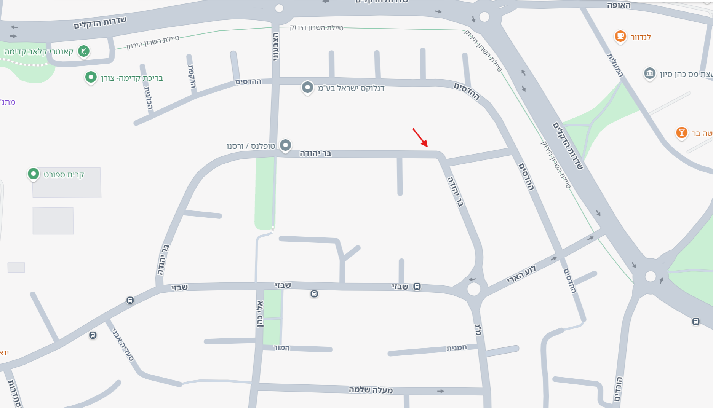

חמש שנים התרענו. היום זה קרה ברחוב בר יהודה.
תאונת דרכים קשה עם נפגעים אירעה היום בעיקול רחוב בר יהודה בקדימה — בדיוק במקום ועל הסכנה שעליהם התרענו בפני המועצה מאז 2021. מספיק. הגיע הזמן לפעול, לפני שיהיה מאוחר מדי.
על הדרישה למועצה
רחוב מגורים צר שהפך למסלול מסוכן
רחוב בר יהודה הוא רחוב צדדי וצר בלב שכונת מגורים — רחוב שילדים חוצים אותו בדרכם אל גן השעשועים ואל בית-הספר. אך מדי יום חולפים בו רכבים במהירות מופרזת, בשני הכיוונים, בכביש שאינו רחב מספיק לשניהם.
- כדי לעבור את הרחוב הצר בבוקר, רכבים עולים על המדרכות שוב ושוב — בדיוק במקום שבו הולכים ילדים.
- בעיקול הרחוב שדה הראייה חסום לחלוטין — רכבים הבאים משני הכיוונים אינם רואים זה את זה עד הרגע האחרון.
- נהיגה במהירות מסוכנת בכל שעות היום והלילה, ברחוב שמשחקים בו ילדים.
- עומסי תנועה חריפים בשעות השיא, שמחמירים את הסיכון לכולם.
חמש שנים של התרעות — ואפס ביצוע
זו אינה בקשה חדשה. המועצה כבר דנה בנושא, קיבלה החלטות רשמיות, וביקשה מאיתנו לאסוף חתימות — ועשינו זאת. ואז שתקה.
-
אוקטובר 2021מכתב התרעה ראשון למועצהתושבי הרחוב פונים בכתב ומתריעים על סכנה תחבורתית ממשית, ובכלל זה בעיקול. כבר אז ביקשנו חד-סטרי, פסי האטה ומראה.
-
7 במרץ 2022פגישה במועצה + מצגת מפורטתנציגי הרחוב מציגים את המפגעים בפני ראשת המועצה, מנכ"ל המועצה ומהנדס המועצה. מתקבלות החלטות רשמיות."הנושאים שהועלו בישיבה יובאו בפני ועדת התנועה, על מנת לקדם את הטיפול בליקויים."
-
13 במרץ 2022המועצה משיבה בכתבאגף ההנדסה מאשר שהנושא מועבר לבחינת צוות מקצועי במסגרת "תכנית אב-תחבורה", ושפסי ההאטה, הצביעה והמראה יועלו בוועדת התנועה הקרובה.
-
2022התושבים מילאו את חלקםאספנו את חתימות דיירי הרחוב והגשנו אותן למועצה — בדיוק כפי שהתבקשנו בישיבה.
-
2022–2026צעד סמלי אחד — שלא הספיקהפעולה היחידה שננקטה היתה התקנת שני פסי האטה נמוכים ליד העיקול — צעד סמלי שלא ריסן את הסכנה. עדיין אין חד-סטרי, אין מראה בעיקול, ואין האטה אפקטיבית.
-
23 ביוני 2026התאונה שעליה התרענותאונת דרכים קשה עם נפגעים מתרחשת בעיקול הרחוב. בדיוק מה שחששנו ממנו, שנים מראש.
הראיות מדברות בעד עצמן
תיעוד אמיתי מהרחוב — התאונה של היום, העיקול שחוסם את הראייה, והעומס המסוכן של כל בוקר.





ארבע דרישות פשוטות שמצילות חיים
אלה אותם פתרונות שהמועצה עצמה כבר הכירה בנחיצותם — ושטרם מומשו כראוי.
רחוב חד-סטרי
הפיכת בר יהודה לרחוב חד-סטרי — בדיוק כפי שכבר נעשה ברחוב ההדסים המקביל.
האטה אפקטיבית
שני פסי ההאטה הנמוכים שהותקנו ליד העיקול אינם מספיקים — נדרשים אמצעי האטה אמיתיים לאורך הרחוב כולו.
מראה בעיקול
התקנת מראה פנורמית בעיקול, כדי לפתוח את שדה הראייה החסום של הנהגים.
הסדרת חנייה
סימון כחול-לבן וחלוקת תווי תושב — כדי להפחית את העומס ולפנות את הכביש.
המכתב שנשלח למועצה
ניסחנו מכתב דרישה רשמי לראשת המועצה, למהנדס ולאגף ההנדסה — הנשען על ההיסטוריה המתועדת ועל התאונה של היום.
"החלטתם. הבטחתם. אנחנו מילאנו את חלקנו. אתם לא עשיתם דבר. היום זה קרה."
המכתב המלא כולל את ציר הזמן, ארבע הדרישות, ודרישה לתשובה בכתב ולפגישת שטח דחופה תוך 14 יום.